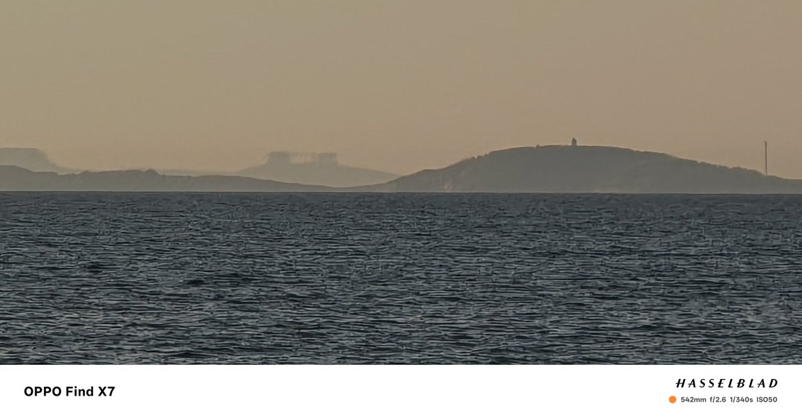

Luka Megurine 03
@LMegurine03
感觉很多人对海市蜃楼都有一些误解，这种现象般情况下都在地平线附近5至10度（有上蜃和下蜃），极端情况下有20度，几乎不会到30度，跟空气折射率有关，网上流传的很多角度更大的几乎在半空出现的，基本上都不是，可能就是平流雾遮挡建筑，玻璃折射或者本身就是二次创作的

Luka Megurine 03
@LMegurine03
居然拍到复杂蜃景了，确实比较明显 https://t.co/ocTo7dvm53